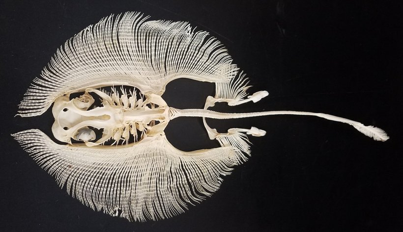
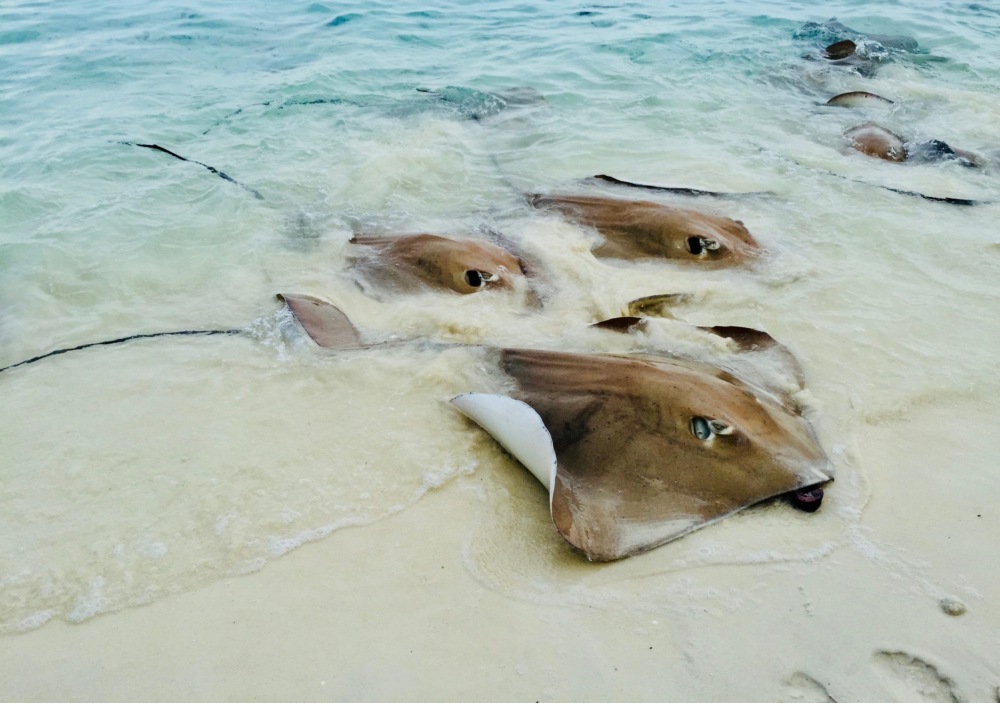

Batoidea
Batoids, like sharks, are among the most ancient fish. They are unique in that they do not use their tail when swimming like other fish do. Batoids move only due to the movements of the fins, while resembling butterflies.
Anatomy
Batoids are one of two superorders of lamellibranch cartilaginous fishes. Their skeleton consists exclusively of cartilage, that is, they do not have a bone skeleton, and the teeth of stingrays, like sharks, are constantly growing and replacing each other. In addition, these cartilaginous fish do not have a swim bladder, so their buoyancy depends on constant movement. Batoids are characterized by a strongly flattened body and large pectoral fins, fused with the head. The mouth, nostrils, and five pairs of gills are on the flat and usually light underside.

Appearance
The upper side of stingrays is adapted in color to a particular living space and can vary from light sandy to black. On the upper side there are eyes and openings into which water enters for breathing. Many batoids species lack scales. The rest, like sharks, have placoid scales - the most ancient type of scales. The scales are rhombic plates that end in a spike that protrudes outward from the skin. In terms of structure and strength, the scales are close to the teeth, which gives reason to call them dermal denticles. The sizes of the rays range from a few centimeters to 6-7 m in length. Batoids reproduce by laying eggs enclosed in a capsule on the bottom, or by ovoviviparity (fry hatch from an egg at the time of its laying). Batoids from the bracken family reach large sizes, whose fin span can reach 2.5 meters, and the length - up to five meters

Habitat
Most batoids live in seawater, but there are a few freshwater species as well. Batoids inhabit all seas and oceans and live in the cold waters of the Arctic and Antarctic, as well as in the tropics. These fish are found both in shallow waters and at depths of up to 2700 m. Although batoids are fish and typical aquatic inhabitants, some of them fly well above the water. Flying batoids, or mobiles, can jump out of the water to a height of several meters and even turn over in the air.

Feeding
Most of the batoids are benthic and feed on mollusks, crayfish and echinoderms.
The fertility of batoids ranges from one to several dozen fry (in sawfish). One of the most famous species of batoids is the manta ray (Manta birostris).
Classification and features
Electric rays
A detachment of electric rays is endowed with a special "weapon", whose representatives, with the help of a special organ made of transformed muscles, can paralyze prey with electric discharges from 60 to 230 volts and over 30 amperes. Electric rays have an organ on their pectoral discs that generates an electric current. With its help, they immobilize the victim and defend themselves. The current strength is enough to stun a person, the ancient Greeks and Romans used these fish to treat diseases, such as headaches.
Skates
Skates are distinguished by the presence of strongly enlarged pectoral fins, which protrude forward on both sides of the head.
Shovelnose rays
Shovelnose rays are an extinct species of rays. They look like sharks, they swim with the help of their tail fin, and they have smaller pectoral fins compared to other rays. They have a long, elongated and flat snout with prominent lateral teeth. The snout can be up to 1.8 m long and 30 cm wide. With its help, Shovelnose rays hit and pierce small fish, and also rummage in the mud in search of buried prey.
Stingrays
Stingrays on the upper surface of the long tail is a long (up to 35 cm) poisonous needle. The poison is highly toxic and can be fatal. Fortunately, the tailed bearers only use their weapons for defense.

The largest from the stingrays
The giant manta ray, or giant sea devil, has the largest brain of all fish species in the world, but manta rays feed on the smallest filtered marine organisms. Unlike its closest living relative, the shark, the manta ray actually has no teeth and feeds on plankton filtered from the water thanks to rows of tiny plates in the mouth, which the manta rays use as a funnel to filter plankton while swimming. Manti control the amount of plankton, its diversity and regulate the nutrient cycle.